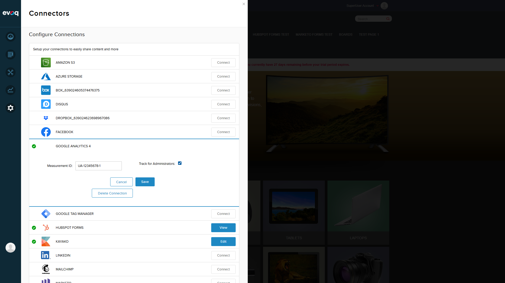
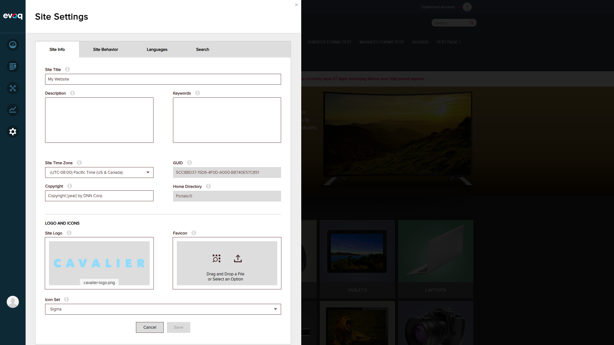

Feature Overview
Feature Name: Custom Dimensions and Variables
Description: Configure custom tracking dimensions and variables based on segmentation rules for enhanced analytics.
UI Location: Rendered in tracking script based on rules
Dependencies: Segmentation Rules, User Authentication
Relevant Code Files
Evoq Platform/Library/Services/Analytics/GoogleAnalyticsProEngine.csEvoq Content/Connectors/GoogleAnalytics/Components/GoogleAnalyticsConnector.csEvoq Content/Connectors/GoogleAnalytics/Scripts/connector.jsEvoq Content/Connectors/GoogleAnalytics/advanced.htm
Code Analysis Summary
Based on code review, the Custom Dimensions and Variables feature is implemented with the following capabilities:
| Feature |
Implementation Details |
| Maximum Custom Variables |
MAX_CUSTOM_VARS = 5 - Up to 5 custom variables allowed |
| Variable Scope |
CUSTVAR_OPT_SCOPE = 3 - Page-level scope |
| Rule-based Targeting |
Variables can target specific pages (TabId) and roles (RoleId) |
| Role Options |
RoleId = -1 (All Users), RoleId = -3 (Unauthenticated Users), or specific role ID |
| Page Personalization |
Uses localStorage key: Analytics.Page.PageVariantDimension |
Script Rendering Logic
if (scriptTemplate.Contains("/analytics.js")) {
// Universal Analytics
scriptTemplate.Replace("[CUSTOM_SCRIPT]", RenderCustomDimensions());
} else {
// Classic GA or GA4
scriptTemplate.Replace("[CUSTOM_SCRIPT]", RenderCustomScript(config));
}
Test Execution
Test Scenario 1: Add Custom Variable for Specific Role
BLOCKED
Objective: Test adding a custom variable that targets users with a specific role.
Steps Taken:
- Logged in as SuperUser (host)
- Navigated to Settings > Connectors
- Located Google Analytics 4 connector
- Clicked Edit to access configuration
- Searched for Advanced Settings / Segmentation Rules option
Result: The "Advanced Settings" link that provides access to Segmentation Rules (custom variables) is not visible in the current GA4 connector UI.

GA4 Connector Edit Panel - No Advanced Settings link visible
Test Scenario 2: Add Custom Variable for Specific Page
BLOCKED
Objective: Test adding a custom variable that targets a specific page.
Result: Unable to test - Segmentation Rules UI not accessible.
Test Scenario 3: Maximum 5 Custom Variables Limit
BLOCKED
Objective: Verify the system enforces a maximum of 5 custom variables.
Code Verification: The code correctly implements this limit:
private const int MAX_CUSTOM_VARS = 5;
...
if (customVarsCount == MAX_CUSTOM_VARS) break;
The UI template (advanced.htm) also enforces this:
<div class="addRule" data-bind="visible: rules().length < 5">
Result: Code verified but runtime test blocked due to UI limitation.
Test Scenario 4: Verify Page-Level Scope (scope=3)
PASS (Code Review)
Objective: Verify custom variables use page-level scope.
Verification: Code confirms page-level scope implementation:
private const int CUSTVAR_OPT_SCOPE = 3; //page level
...
_gaq.push(['_setCustomVar', customVarsCount, label, value, CUSTVAR_OPT_SCOPE]);
Result: Code correctly implements page-level scope (scope=3).
Test Scenario 5: Custom Dimension for Page Variants
BLOCKED
Objective: Test custom dimension for page personalization variants.
Code Verification: The feature exists for Universal Analytics:
var script =
"var dimensionName = localStorage.getItem('Analytics.Page.PageVariantDimension');\n" +
"if (dimensionName != undefined && dimensionName != '') { ga('set', dimensionName, '" +
personalizedPageName + "'); }";
Result: This feature only activates when using the Universal Analytics template (analytics.js), not with the GA4 gtag.js template currently in use.
Test Scenario 6: Validate localStorage for Dimension Names
PASS (Code Review)
Objective: Verify the system uses localStorage for dimension name storage.
Verification: Code uses localStorage key Analytics.Page.PageVariantDimension:
localStorage.getItem('Analytics.Page.PageVariantDimension');
Result: Code correctly implements localStorage for dimension name storage.
Test Scenario 7: GA Tracking Script Rendering
PASS
Objective: Verify GA tracking script is rendered on the page.
Steps:
- Enabled "Track for Administrators" option
- Saved configuration
- Refreshed page
- Inspected page source for GA scripts
Result: GA tracking script is correctly rendered:
<script async src="https://www.googletagmanager.com/gtag/js?id=UA-12345678-1"></script>
<script>
window.dataLayer = window.dataLayer || [];
function gtag(){dataLayer.push(arguments);}
gtag('js', new Date());
gtag('config', 'UA-12345678-1');
</script>

Track for Administrators option enabled
Key Findings
Critical Issue: Advanced Settings UI Not Accessible
The GA4 connector ("Google Analytics 4") does not display the "Advanced Settings" link that would provide access to the Segmentation Rules configuration. This link exists in the codebase:
connector.htm: Contains <a class="advancedSetting">connector.js: Handles click event to open Advanced Settings dialogadvanced.htm: Contains the full Segmentation Rules UI with Label, Value, Page, and Role fields
However, the current GA4 connector panel only shows:
- Measurement ID field
- Track for Administrators checkbox
- Cancel, Save, Delete Connection buttons
Configuration Template Mismatch
The system is configured with a Universal Analytics tracking ID (UA-12345678-1) but uses the GA4 template (gtag.js) instead of the Universal Analytics template (analytics.js). This affects which custom dimension rendering method is used:
- gtag.js template: Uses
RenderCustomScript(config) - relies on segmentation rules
- analytics.js template: Uses
RenderCustomDimensions() - includes localStorage page variants
Test Screenshots

Step 1: Initial Homepage View

Step 2: Logged in as SuperUser

Step 3: Connectors Configuration Page

Step 5: GA4 Connector - No Advanced Settings Link

Step 7: Configuration Save Success

Step 8: Page with GA Tracking Script